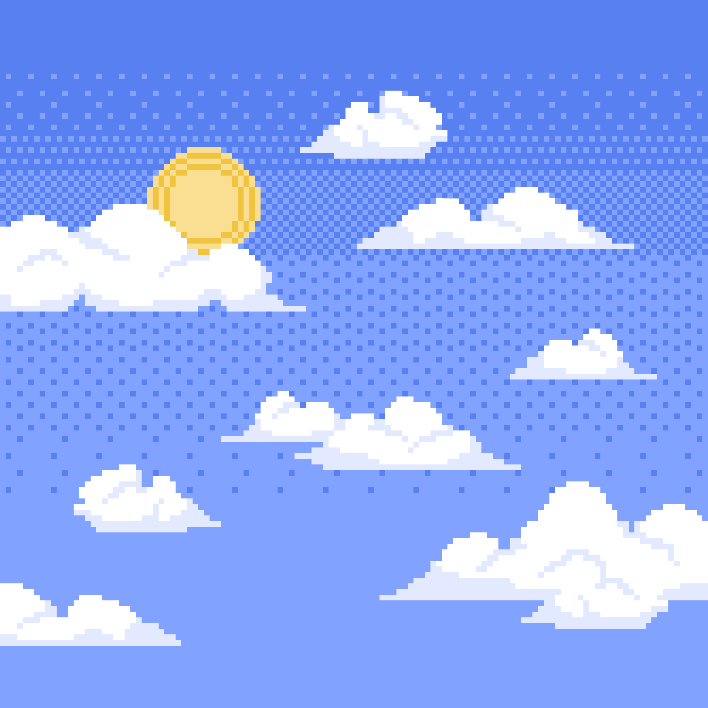

Фритрек и нулевой спринт: Подготовка к работе
</HTML>

Это было самое начало пути. На этом этапе важно было проникнуться основами и настроиться на учёбу. И, возможно, подумать, как новые знания могут повлиять на ваше будущее.
Во время прохождения вводного спринта появилось желание обучиться frontend-разработке, я думаю, это очень интересно